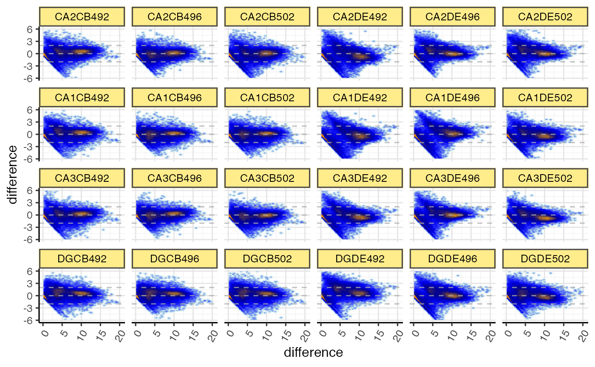
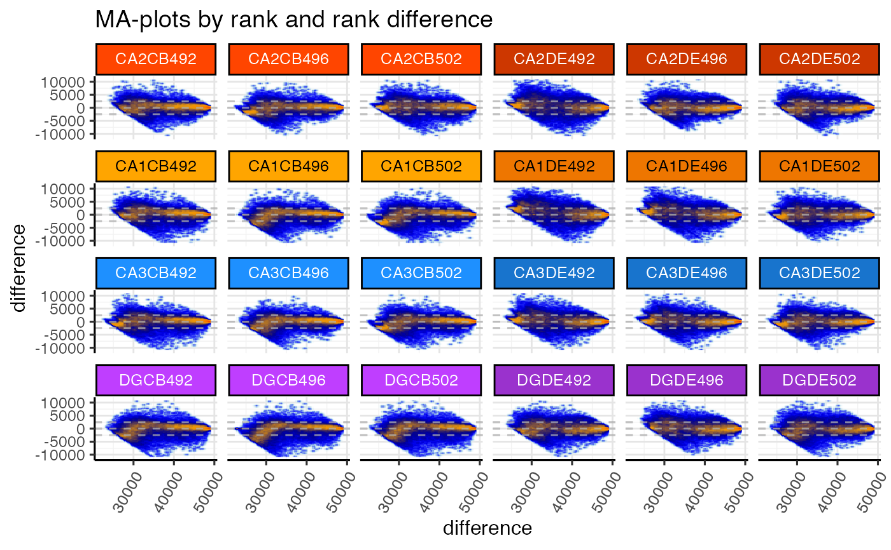
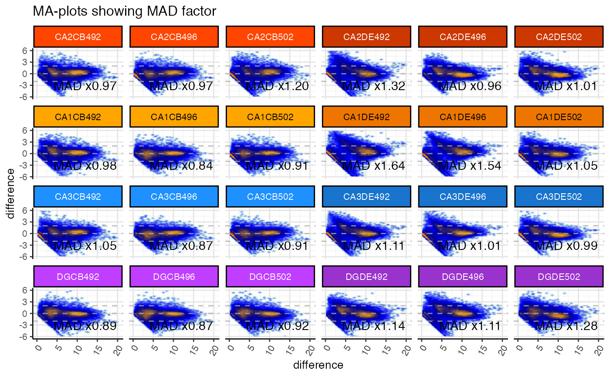
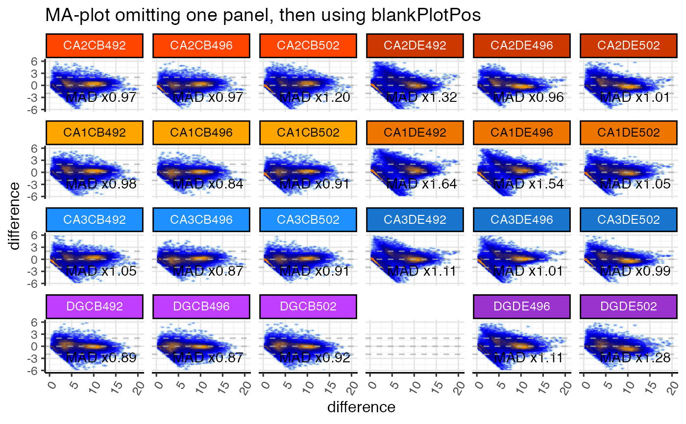

MA-plots using ggplot2
ggjammaplot( x, nbin_factor = 1, bw_factor = 1, assay_name = 1, useMedian = FALSE, controlSamples = NULL, centerGroups = NULL, groupedX = TRUE, grouped_mad = TRUE, outlierMAD = 5, mad_row_min = 4, displayMAD = FALSE, noise_floor = 1e-10, noise_floor_value = NA, naValue = NA, centerFunc = centerGeneData, whichSamples = NULL, useRank = FALSE, titleBoxColor = "lightgoldenrod1", outlierColor = "palegoldenrod", maintitle = NULL, subtitle = NULL, summary = "mean", difference = "difference", transFactor = 0.2, doPlot = TRUE, highlightPoints = NULL, highlightPch = 21, highlightCex = 1.5, highlightColor = NULL, doHighlightLegend = TRUE, ablineH = c(-2, 0, 2), base_size = 12, panel.grid.major.colour = "grey90", panel.grid.minor.colour = "grey95", return_type = c("ggplot", "data"), xlim = NULL, ylim = c(-6, 6), ncol = NULL, nrow = NULL, blankPlotPos = NULL, verbose = FALSE, ... )
| x | one of the following inputs:
|
|---|---|
| nbin_factor |
|
| bw_factor |
|
| assay_name | relevant only when
|
| useMedian |
|
| controlSamples |
|
| centerGroups |
|
| groupedX |
|
| grouped_mad |
|
| outlierMAD |
|
| mad_row_min |
|
| displayMAD |
|
| noise_floor |
|
| naValue |
|
| centerFunc |
|
| whichSamples |
|
| useRank |
|
| titleBoxColor |
|
This method is under active development and may change as features are implemented.
It is currently fully functional and is being documented.
Other jam plot functions:
jammaplot()
if (jamba::check_pkg_installed("SummarizedExperiment") && jamba::check_pkg_installed("farrisdata")) { suppressPackageStartupMessages(require(SummarizedExperiment)); GeneSE <- farrisdata::farrisGeneSE; titleBoxColor <- jamba::nameVector( farrisdata::colorSub[as.character(colData(GeneSE)$groupName)], colnames(GeneSE)); options("warn"=FALSE); gg <- ggjammaplot(GeneSE, ncol=6, base_size=12, assay_name="raw_counts") gg <- ggjammaplot(GeneSE, ncol=6, assay_name="counts", useRank=TRUE, ylim=c(-11000, 11000), maintitle="MA-plots by rank and rank difference", titleBoxColor=titleBoxColor) gg <- ggjammaplot(GeneSE, ncol=6, assay_name="counts", titleBoxColor=titleBoxColor, base_size=10, maintitle="MA-plots showing MAD factor", displayMAD=TRUE) gg <- ggjammaplot(GeneSE, ncol=6, assay_name="counts", titleBoxColor=titleBoxColor, maintitle="MA-plot omitting one panel, then using blankPlotPos", whichSamples=colnames(GeneSE)[c(1:21, 23:24)], blankPlotPos=22, displayMAD=TRUE) if (FALSE) { ggdf <- ggjammaplot(GeneSE, assay_name="counts", whichSamples=c(1:3, 7:9), return_type="data", titleBoxColor=titleBoxColor) highlightPoints1 <- names(jamba::tcount(subset(ggdf, mean > 15 & difference < -1)$item, 2)) highlightPoints2 <- subset(ggdf, name %in% "CA1CB492" & difference < -4.5)$item; highlightPoints <- list( divergent=highlightPoints1, low_CA1CB492=highlightPoints2); ggdf_h <- ggjammaplot(GeneSE, assay_name="counts", highlightPoints=highlightPoints, whichSamples=c(1:3, 7:9), return_type="data", titleBoxColor=titleBoxColor) # you can use output from `jammaplot()` as input to `ggjammaplot()`: jp2 <- jammaplot(GeneSE, outlierMAD=2, doPlot=FALSE, assay_name="raw_counts", filterFloor=1e-10, filterFloorReplacement=NA, centerGroups=colData(GeneSE)$Compartment, subtitleBoxColor=farrisdata::colorSub[as.character(colData(GeneSE)$Compartment)], useRank=FALSE); gg1 <- ggjammaplot(jp2, ncol=6, titleBoxColor=titleBoxColor); print(gg1); } }#> Warning: package ‘SummarizedExperiment’ was built under R version 3.6.2#> Warning: package ‘S4Vectors’ was built under R version 3.6.3#> Warning: package ‘IRanges’ was built under R version 3.6.2#> Warning: package ‘DelayedArray’ was built under R version 3.6.3#> Warning: package ‘matrixStats’ was built under R version 3.6.2#> Warning: Ignoring unknown parameters: stat#> Warning: Removed 534 rows containing non-finite values (stat_density2d).#> Warning: Removed 7776 rows containing missing values (geom_raster).#> Warning: Ignoring unknown parameters: stat#> Warning: Removed 140 rows containing non-finite values (stat_density2d).#> Warning: Removed 7776 rows containing missing values (geom_raster).#> Warning: Ignoring unknown parameters: stat#> Warning: Removed 322 rows containing non-finite values (stat_density2d).#> Warning: Removed 7776 rows containing missing values (geom_raster).#> Warning: Ignoring unknown parameters: stat#> Warning: Removed 317 rows containing non-finite values (stat_density2d).#> Warning: Removed 7636 rows containing missing values (geom_raster).